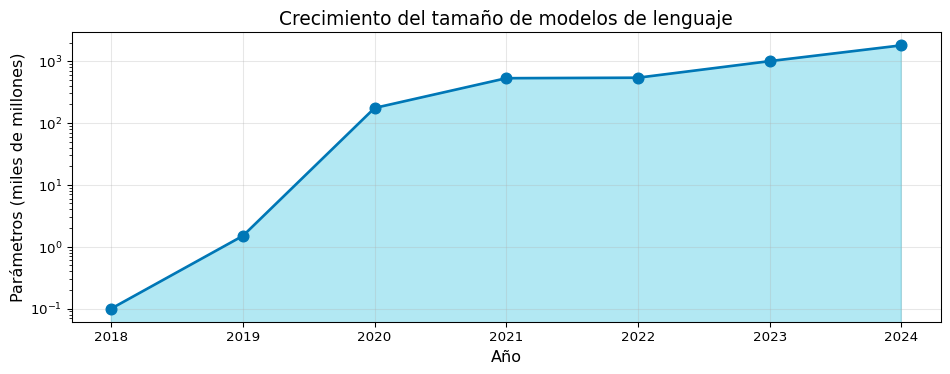

Code
graph TD
A[Ciencias de la<br>Computación] --> D[NLP]
B[Inteligencia<br>Artificial] --> D
C[Lingüística] --> D
style D fill:#0077b6,stroke:#023e8a,color:#fff
S1: ¿Qué es NLP? Historia (Del Test de Turing a ChatGPT)
Universidad Católica Boliviana
2026-02-07
Primera Parte
Segunda Parte
“El lenguaje es el vestido del pensamiento.” — Samuel Johnson
Este curso les llevará en un viaje desde los fundamentos del procesamiento de texto hasta los modelos de lenguaje más avanzados como ChatGPT y Claude.
Objetivo General
Desarrollar competencias teóricas y prácticas en el análisis computacional del lenguaje humano.
Fundamentos
Avanzado
| Componente | Peso | Descripción |
|---|---|---|
| Examen | 30% | Evaluación teórica (Semanas 1-10) |
| Proyecto Grupal | 30% | Aplicación NLP completa |
| Ejercicios (Tareas) | 20% | 4 tareas prácticas de programación |
| Quizzes | 10% | Evaluaciones cortas bi-semanales |
| Participación | 10% | Asistencia y contribución en clase |
Uso Permitido de LLMs
Se permite el uso de herramientas de IA (ChatGPT, Claude, Copilot, etc.) bajo las siguientes condiciones:
⚠️ En Tareas y Exámenes
Regla de Oro
Si el LLM hace tu trabajo, está mal. Si te ayuda a entender para que tú hagas el trabajo, está bien.
El Procesamiento de Lenguaje Natural (NLP) es un campo interdisciplinario que se encuentra en la intersección de:
graph TD
A[Ciencias de la<br>Computación] --> D[NLP]
B[Inteligencia<br>Artificial] --> D
C[Lingüística] --> D
style D fill:#0077b6,stroke:#023e8a,color:#fff
“Vi al hombre con el telescopio” — ¿Quién lo tiene?
0 y 101001000 01101111 01101100 01100001= “Hola” en ASCII
El Desafío
¿Cómo enseñamos a una máquina a entender el lenguaje humano con toda su complejidad?
Veamos cómo una computadora “ve” una oración:
# Dividir una frase en palabras (tokenización básica)
oracion = "El procesamiento de lenguaje natural es fascinante"
# Método simple: split()
palabras = oracion.split()
print(f"Oración original: '{oracion}'")
print(f"Número de palabras: {len(palabras)}")
print(f"Lista de tokens: {palabras}")
# Ver cada palabra con su posición
for i, palabra in enumerate(palabras):
print(f" Token {i}: '{palabra}' (longitud: {len(palabra)})")Oración original: 'El procesamiento de lenguaje natural es fascinante'
Número de palabras: 7
Lista de tokens: ['El', 'procesamiento', 'de', 'lenguaje', 'natural', 'es', 'fascinante']
Token 0: 'El' (longitud: 2)
Token 1: 'procesamiento' (longitud: 13)
Token 2: 'de' (longitud: 2)
Token 3: 'lenguaje' (longitud: 8)
Token 4: 'natural' (longitud: 7)
Token 5: 'es' (longitud: 2)
Token 6: 'fascinante' (longitud: 10)flowchart LR
A[📥 Recolección<br>de Datos] --> B[🧹 Limpieza y<br>Preprocesamiento]
B --> C[🔤 Tokenización]
C --> D[📊 Extracción de<br>Características]
D --> E[🤖 Modelado]
E --> F[📈 Evaluación]
F --> G[🚀 Despliegue]
style A fill:#caf0f8,color:#000
style B fill:#ade8f4,color:#000
style C fill:#90e0ef,color:#000
style D fill:#48cae4,color:#000
style E fill:#00b4d8,color:#fff
style F fill:#0096c7,color:#fff
style G fill:#0077b6,color:#fffflowchart LR
A[📥 Recolección<br>de Datos] --> B[🧹 Limpieza y<br>Preprocesamiento]
B --> C[🔤 Tokenización]
C --> D[📊 Extracción de<br>Características]
D --> E[🤖 Modelado]
E --> F[📈 Evaluación]
F --> G[🚀 Despliegue]
style A fill:#caf0f8,color:#000
style B fill:#ade8f4,color:#000
style C fill:#90e0ef,color:#000
style D fill:#48cae4,color:#000
style E fill:#00b4d8,color:#fff
style F fill:#0096c7,color:#fff
style G fill:#0077b6,color:#fff
Preprocesamiento
Modelado
timeline
title Evolución del Procesamiento de Lenguaje Natural
1950 : Test de Turing
: "¿Pueden pensar las máquinas?"
1954 : Experimento Georgetown-IBM
: Primera traducción automática
1966 : ELIZA
: Primer chatbot
1970s : Invierno de la IA
: Desilusión y recortes
1980s : Modelos Estadísticos
: N-grams y probabilidad
2013 : Word2Vec
: Representaciones densas
2017 : Transformer
: "Attention is All You Need"
2018 : BERT
: Bidireccional
2022 : ChatGPT
: IA Generativa masivatimeline
title Evolución del Procesamiento de Lenguaje Natural
1950 : Test de Turing
: "¿Pueden pensar las máquinas?"
1954 : Experimento Georgetown-IBM
: Primera traducción automática
1966 : ELIZA
: Primer chatbot
1970s : Invierno de la IA
: Desilusión y recortes
1980s : Modelos Estadísticos
: N-grams y probabilidad
2013 : Word2Vec
: Representaciones densas
2017 : Transformer
: "Attention is All You Need"
2018 : BERT
: Bidireccional
2022 : ChatGPT
: IA Generativa masiva
Alan Turing propuso en su artículo “Computing Machinery and Intelligence”:
“¿Pueden pensar las máquinas?”
. . .
El Juego de la Imitación:
Si C no puede distinguir entre A y B, la máquina “piensa”.
graph TD
C[🧑 Interrogador<br>C] -->|Preguntas| A[🤖 Máquina<br>A]
C -->|Preguntas| B[👤 Humano<br>B]
A -->|Respuestas| C
B -->|Respuestas| C
style C fill:#ffd166
style A fill:#ef476f
style B fill:#06d6a0
El primer sistema de traducción automática público:
. . .
Predicción optimista: > “En 3 a 5 años, la traducción automática será un problema resuelto”
. . .
Spoiler
Tardamos más de 60 años en lograr traducciones de calidad con Neural MT.
Ejemplo traducido:
🇷🇺 “Мы передаём мысли посредством речи”
⬇️
🇺🇸 “We transmit thoughts by means of speech”
Creado por Joseph Weizenbaum en el MIT:
Características:
Ejemplo de conversación:
Usuario: Estoy muy triste hoy
ELIZA: ¿Por qué estás triste?
Usuario: Mi madre me critica
ELIZA: Cuéntame más sobre tu madre
Usuario: Ella nunca está satisfecha
ELIZA: ¿Quién más en tu familia
no está satisfecho?Efecto ELIZA
Muchos usuarios creían que ELIZA realmente los “entendía”, demostrando nuestra tendencia a antropomorfizar las máquinas.
El Informe ALPAC (1966) concluyó:
“La traducción automática es más lenta, menos precisa y dos veces más costosa que la traducción humana”
. . .
Consecuencias:
Limitaciones identificadas:
El cambio de paradigma: De reglas a probabilidades
Enfoque basado en reglas:
SI palabra = "banco" Y
contexto = "dinero"
ENTONCES significado = "institución financiera"Problema: ¿Cuántas reglas necesitamos?
Enfoque estadístico: \[P(\text{significado}|\text{contexto})\]
Aprender de datos en lugar de programar reglas.
Cita Famosa
“Every time I fire a linguist, the performance of the speech recognizer goes up”
— Fred Jelinek, IBM (1985)
Word2Vec (Mikolov et al., 2013) revolucionó la representación de palabras:
Antes: One-hot encoding
rey = [1,0,0,0,0,...]
reina = [0,1,0,0,0,...]No captura relaciones semánticas
Después: Dense vectors
rey = [0.2, 0.8, -0.1, ...]
reina = [0.3, 0.7, -0.2, ...]Palabras similares → vectores cercanos
La famosa analogía:
\[\vec{rey} - \vec{hombre} + \vec{mujer} \approx \vec{reina}\]
El paper que cambió todo: Transformer (Vaswani et al., 2017)
Innovaciones clave:
. . .
El mecanismo de atención: \[\text{Attention}(Q,K,V) = \text{softmax}\left(\frac{QK^T}{\sqrt{d_k}}\right)V\]
graph TB
subgraph Transformer
A[Input] --> B[Encoder]
B --> C[**Attention**]
C --> D[Decoder]
D --> E[Output]
end
style A fill:#ffffff,stroke:#333,stroke-width:2px,color:#000
style B fill:#e3f2fd,stroke:#333,stroke-width:2px,color:#000
style C fill:#ffcdd2,stroke:#d32f2f,stroke-width:4px,color:#000
style D fill:#e3f2fd,stroke:#333,stroke-width:2px,color:#000
style E fill:#ffffff,stroke:#333,stroke-width:2px,color:#000
style Transformer fill:#ffffff,stroke:#333,color:#000
linkStyle default stroke:#333,stroke-width:2pxgraph TB
subgraph Transformer
A[Input] --> B[Encoder]
B --> C[**Attention**]
C --> D[Decoder]
D --> E[Output]
end
style A fill:#ffffff,stroke:#333,stroke-width:2px,color:#000
style B fill:#e3f2fd,stroke:#333,stroke-width:2px,color:#000
style C fill:#ffcdd2,stroke:#d32f2f,stroke-width:4px,color:#000
style D fill:#e3f2fd,stroke:#333,stroke-width:2px,color:#000
style E fill:#ffffff,stroke:#333,stroke-width:2px,color:#000
style Transformer fill:#ffffff,stroke:#333,color:#000
linkStyle default stroke:#333,stroke-width:2px
Bidirectional Encoder Representations from Transformers
Generative Pre-trained Transformer
ChatGPT (Nov 2022)
GPT-3.5 + RLHF = La IA que llegó a 100 millones de usuarios en 2 meses.
graph LR
A[1950<br>Test de Turing<br>🤔 Filosofía] --> B[1960s<br>Reglas<br>📝 Simbólico]
B --> C[1980s<br>Estadístico<br>📊 Probabilidad]
C --> D[2013<br>Embeddings<br>🎯 Representación]
D --> E[2017<br>Transformers<br>⚡ Atención]
E --> F[2022<br>ChatGPT<br>🚀 AGI?]
style A fill:#ffd166
style B fill:#f4a261
style C fill:#e76f51
style D fill:#2a9d8f
style E fill:#264653
style F fill:#e63946graph LR
A[1950<br>Test de Turing<br>🤔 Filosofía] --> B[1960s<br>Reglas<br>📝 Simbólico]
B --> C[1980s<br>Estadístico<br>📊 Probabilidad]
C --> D[2013<br>Embeddings<br>🎯 Representación]
D --> E[2017<br>Transformers<br>⚡ Atención]
E --> F[2022<br>ChatGPT<br>🚀 AGI?]
style A fill:#ffd166
style B fill:#f4a261
style C fill:#e76f51
style D fill:#2a9d8f
style E fill:#264653
style F fill:#e63946
import matplotlib.pyplot as plt
años = [2018, 2019, 2020, 2021, 2022, 2023, 2024]
parametros = [0.1, 1.5, 175, 530, 540, 1000, 1800] # En miles de millones
plt.figure(figsize=(10, 4))
plt.plot(años, parametros, marker='o', linewidth=2, markersize=8, color='#0077b6')
plt.fill_between(años, parametros, alpha=0.3, color='#00b4d8')
plt.xlabel('Año', fontsize=12)
plt.ylabel('Parámetros (miles de millones)', fontsize=12)
plt.title('Crecimiento del tamaño de modelos de lenguaje', fontsize=14)
plt.yscale('log')
plt.grid(True, alpha=0.3)
plt.tight_layout()
plt.show()
“Algunas personas, cuando se enfrentan a un problema, piensan: ‘Ya sé, usaré expresiones regulares.’ Ahora tienen dos problemas.”
— Jamie Zawinski
S2: Regular Expressions - La Navaja Suiza del NLP
Aprenderemos a buscar, extraer y manipular patrones de texto de forma eficiente.
¡Gracias!
📧 fsuarez@ucb.edu.bo
🔗 Materiales: github.com/fjsuarez/ucb-nlp
NLP y Análisis Semántico | Semana 1